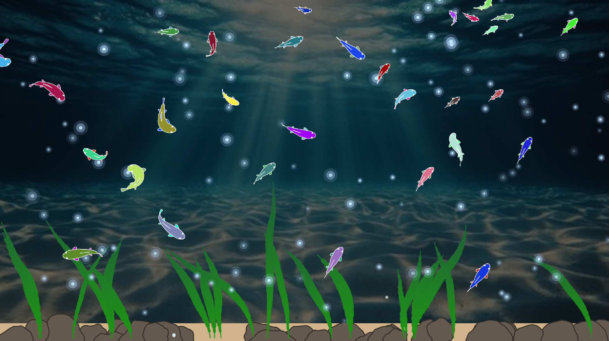

Interactive experiment · Processing
Dynamic Aquarium
A small aquarium of colourful fish, swimming together among rocks and swaying seaweed.
A look inside
Fish that move together
We made an aquarium where fish of different sizes and colours move through the same space. Each fish has a chain of joints: as the head moves, the rest of the body follows, giving it the flexibility to bend and turn.
The fish also respond to their neighbours. The sketch combines cohesion, separation and alignment with attraction to food and avoidance of the rocks, walls and floor. Together these behaviours shape the movement of the group.
Making the water feel alive
The aquarium has a sandy floor, rocks, bubbles and clumps of seaweed. A water current follows the fish group's average velocity with a little smoothing, and its horizontal force moves the seaweed.
At night the background darkens and glowing particles appear in the water. Food falls through the aquarium, swaying as it descends, and nearby fish can move towards it.

Team and inspirations
Team: Luís Antônio de Albuquerque Hollanda and Tzuling Lin.
Procedural fish animation: Based on and adapted from argonautcode/animal-proc-anim and its related tutorial video.
Music used in class demos: Dire Dire Docks (underwater) for day and Cosmic Cove Galaxy (slowed + rain ambience) for night. These tracks were used during class demos of the prototype.